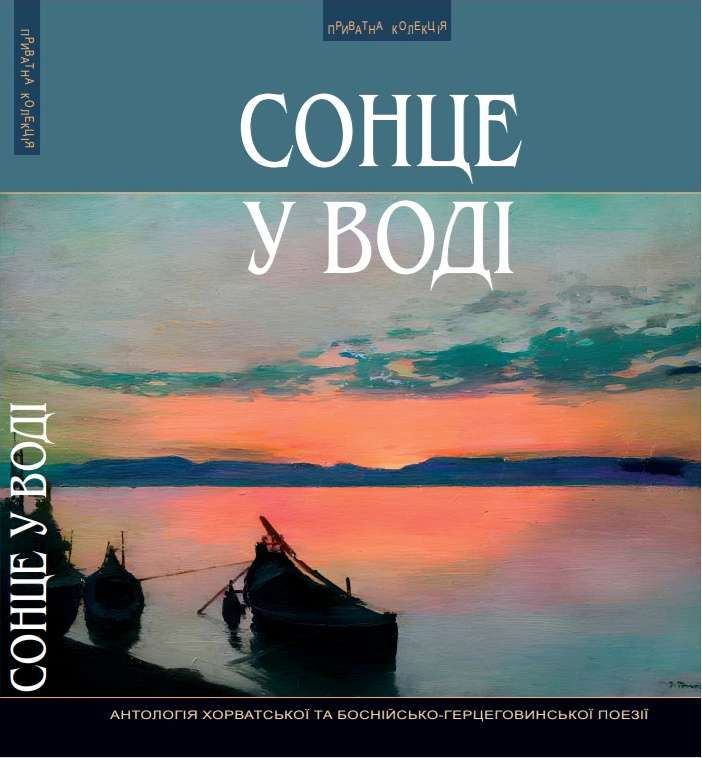
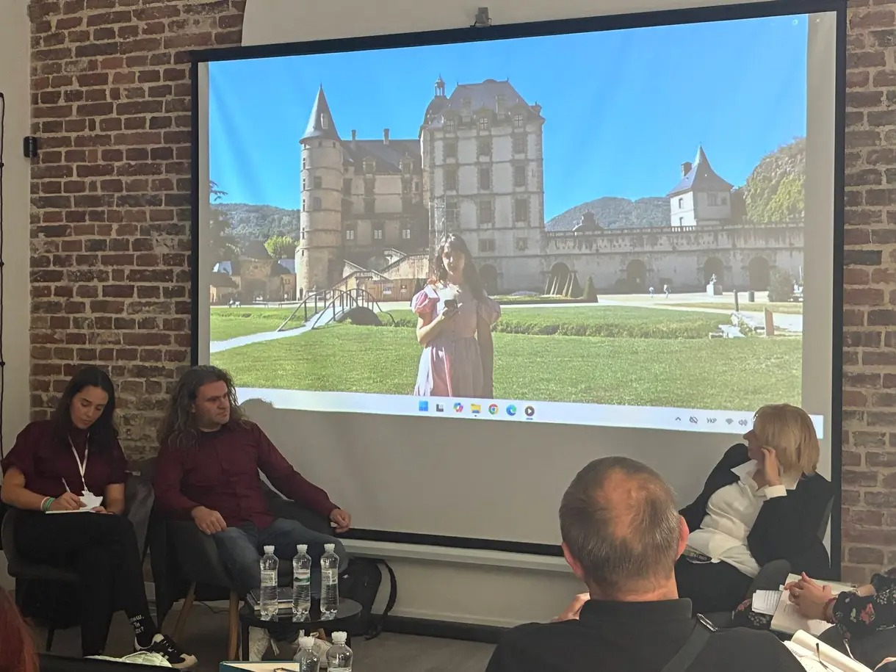

Vladana Perlić’s poems appear in Ukrainian in Sun in the Water
Ten poems by Vladana Perlić have been published in Ukrainian translation in Sun in the Water («Сонце у воді»), a new anthology of contemporary Croatian and Bosnian-Herzegovinian poetry from the Lviv publisher Piramida. Selected and edited by the Croatian writer Siniša Matasović, the book brings together fifteen poets, each represented by ten poems.
The anthology was presented on 13 September 2026 at the Pivden Cultural Hub (Культурний хаб Південь) as part of the Lviv BookForum, one of Ukraine’s leading literary and publishing festivals. Under the title Poetic Voices of Croatia, translator Alla Tatarenko and editor Siniša Matasović introduced the book to Ukrainian audiences with a presentation and poetry reading. During the festival (11–13 September), the anthology was also presented at the Ivan Franko National University of Lviv, founded in 1661.
The poems were translated by Alla Tatarenko, Mariana Komarytsia, and Maria Shun, with the foreword translated by Anna Komarytsia. With this publication, Ukrainian joins the languages Vladana’s poetry has been translated into, alongside English, French, German, Italian, Polish, Hungarian, and Hindi.
Also in the anthology: Krešimir Bagić, Tomica Bajsić, Boris Domagoj Biletić, Tomislav Marijan Bilosnić, Lana Derkač, Sanja Domenuš, Ivan Herceg, Žarko Jovanovski, Senka Marić, Siniša Matasović, Semezdin Mehmedinović, Melida Travančić, Darija Žilić, and Joso Živković.